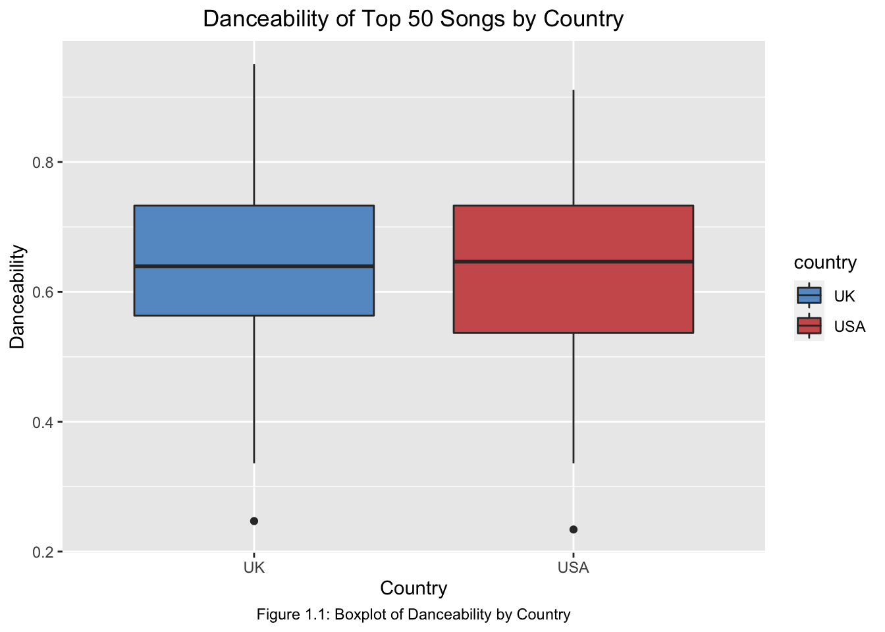
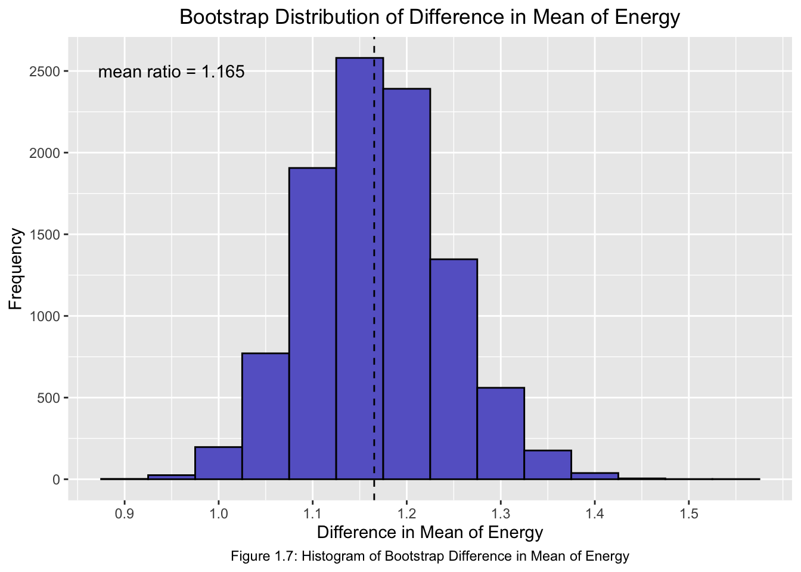
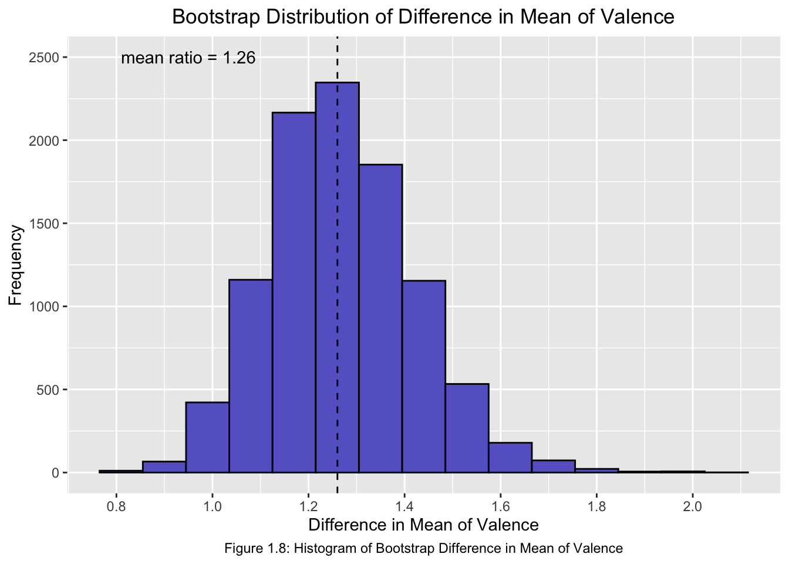

Attaching package: 'psych'
The following objects are masked from 'package:ggplot2':
%+%, alpha
library(dplyr)library(arsenal)library(gridExtra)
Attaching package: 'gridExtra'
The following object is masked from 'package:dplyr':
combine
library(grid)# Load data# Top 50 USAusa <-read.csv('./GitHub/filtered_usa_top50.csv')# Top 50 UKuk <-read.csv('./GitHub/filtered_uk_top50.csv')# adding "country" column to each df; will be used for EDA purposesusa$country <-"USA"uk$country <-"UK"# combine usa and uk into one dfboth <-rbind(usa, uk)# create df of both with just three variables (danceability, energy, and valence) of interest and countryboth.interest <- both %>%select(danceability, energy, valence, country)# summary statistics - USAsummary(usa[c('danceability', 'energy', 'valence')])
danceability energy valence
Min. :0.2340 Min. :0.1560 Min. :0.0374
1st Qu.:0.5370 1st Qu.:0.4270 1st Qu.:0.1915
Median :0.6465 Median :0.5250 Median :0.3565
Mean :0.6252 Mean :0.5360 Mean :0.3931
3rd Qu.:0.7330 3rd Qu.:0.6428 3rd Qu.:0.5268
Max. :0.9110 Max. :0.9650 Max. :0.9470
danceability energy valence
Min. :0.2470 Min. :0.2140 Min. :0.0374
1st Qu.:0.5635 1st Qu.:0.4723 1st Qu.:0.2510
Median :0.6395 Median :0.6240 Median :0.4330
Mean :0.6404 Mean :0.6247 Mean :0.4954
3rd Qu.:0.7330 3rd Qu.:0.7900 3rd Qu.:0.6995
Max. :0.9510 Max. :0.9650 Max. :0.9720
Comparison of Danceability - very minimal difference in the mean of danceability. UK is 0.64 and USA is 0.63. Expected UK to be higher as their charts often reflect more dance/edm/pop songs (“club music”). Danceability represents a combination of tempo, rhythm stability, beat strength, and regularity.
Comparison of Energy - somewhat significant difference in the mean of energy. UK is higher at 0.62 and USA is lower at 0.54. Energy represents the intensity and activity of a song, thought this would compare easily to danceability but they are different.
Comparison of Valence - somewhat significant difference in the mean of valence. UK is higher at 0.5 and USA is lower at 0.4. Valence compares the musical positiveness of a song, higher value means more positive.
# Boxplot for danceability varibleboth %>%ggplot( aes(x = country, y = danceability, fill=country)) +geom_boxplot() +labs(title ="Danceability of Top 50 Songs by Country",caption ="Figure 1.1: Boxplot of Danceability by Country")+scale_fill_manual(values =c("#6699cc", "#cd5c5c")) +xlab("Country") +ylab("Danceability")+theme(plot.title =element_text(hjust =0.5), plot.caption =element_text(hjust =0.5))

In Figure 1.1, we can see there is not much difference at all between the countries. The median danceability is slightly higher for the USA than the UK. The interquartile range is also slightly larger for the USA than the UK.
Welch Two Sample t-test
data: uk.dance and usa.dance
t = 0.50209, df = 97.495, p-value = 0.3084
alternative hypothesis: true difference in means is greater than 0
95 percent confidence interval:
-0.03502688 Inf
sample estimates:
mean of x mean of y
0.64036 0.62518
Interpretation - Since p-value is greater than 0.05, at 5% significance level, we have enough evidence to conclude that we fail to reject the null hypothesis. Therefore there is not strong evidence that the danceability of music in the top 50 in the UK is higher than music in the top 50 in the USA.
Welch Two Sample t-test
data: uk.energy and usa.energy
t = 2.4176, df = 97.155, p-value = 0.008744
alternative hypothesis: true difference in means is greater than 0
95 percent confidence interval:
0.02775839 Inf
sample estimates:
mean of x mean of y
0.62468 0.53602
Interpretation - Since p-value is less than 0.05, at 5% significance level, we have enough evidence to conclude that we reject the null hypothesis. Therefore there is strong evidence that the energy of music in the top 50 in the UK is higher than music in the top 50 in the USA.
set.seed(1999)# bootstrap ratio of means of energyN <-10000energy.diff.mean.ratio <-numeric(N) for (i in1:N){uk.sample <-sample(uk.energy, 50, replace =TRUE)usa.sample <-sample(usa.energy, 50, replace =TRUE) energy.diff.mean.ratio[i] <-mean(uk.sample) /mean(usa.sample)}#hist(energy.diff.mean.ratio,main = "Bootstrap Distribution of Difference in Mean of Energy", col = '#6666cc', xlab = 'Difference in Mean of Energy')#abline(v = mean(uk.energy) / mean(usa.energy), col = "black", lty = 2)# 95 percent confidence intervalquantile(energy.diff.mean.ratio, c(0.025, 0.975))
2.5% 97.5%
1.028055 1.320461
The 95% bootstrap percentile confidence interval for the ratio of means (UK energy / USA energy) is (1.03, 1.32). Thus, we are 95% confident that the energy of top 50 UK songs are, on average, between 1.03 and 1.32 times greater than top 50 USA songs.
# create copy of energy.diff.mean.ratio into dfenergy.diff.mean.ratio.df <-as.data.frame(energy.diff.mean.ratio)# Histogram for bootstrap ratio of means of energyboot.energy.hist <-ggplot(energy.diff.mean.ratio.df, aes(x=energy.diff.mean.ratio))+geom_histogram(binwidth=0.05, color="black", fill="#6666cc")+labs(title="Bootstrap Distribution of Difference in Mean of Energy", x ="Difference in Mean of Energy", y ="Frequency", caption ="Figure 1.7: Histogram of Bootstrap Difference in Mean of Energy")+annotate("text", x=.95, y=2500, label="mean ratio = 1.165")+scale_x_continuous(breaks=c(0.9, 1.0, 1.1, 1.2, 1.3, 1.4, 1.5))+scale_y_continuous(breaks=seq(0,2500,500))+theme(plot.title =element_text(hjust =0.5), plot.caption =element_text(hjust =0.5))+geom_vline(xintercept =mean(mean(uk.energy) /mean(usa.energy)), col ="black", linetype="dashed")boot.energy.hist

In Figure 1.7, we can see the distribution of the difference in mean energy between the UK and the USA. The difference in the ratio of mean of energy is 1.165. On average, UK top 50 songs are 1.165 times greater than that of the USA top 50 songs.
Welch Two Sample t-test
data: uk.valence and usa.valence
t = 1.949, df = 97.448, p-value = 0.02709
alternative hypothesis: true difference in means is greater than 0
95 percent confidence interval:
0.01513129 Inf
sample estimates:
mean of x mean of y
0.495358 0.393088
Interpretation - Since p-value is less than 0.05, at 5% significance level, we have enough evidence to conclude that we reject the null hypothesis. Therefore there is strong evidence that the valence of music in the top 50 in the UK is higher than music in the top 50 in the USA.
set.seed(1999)# bootstrap ratio of means of valenceN <-10000valence.diff.mean.ratio <-numeric(N) for (i in1:N){uk.sample <-sample(uk.valence, 50, replace =TRUE)usa.sample <-sample(usa.valence, 50, replace =TRUE) valence.diff.mean.ratio[i] <-mean(uk.sample) /mean(usa.sample)}#hist(valence.diff.mean.ratio,main = "Bootstrap Distribution of Difference in Mean of Valence", col = '#6666cc', xlab = 'Difference in Mean of Valence')#abline(v = mean(uk.valence) / mean(usa.valence), col = "black", lty = 2)# 95 percent confidence intervalquantile(valence.diff.mean.ratio, c(0.025, 0.975))
2.5% 97.5%
1.000473 1.588290
The 95% bootstrap percentile confidence interval for the ratio of means (UK valence / USA valence) is (1, 1.59). Thus, we are 95% confident that the valence of top 50 UK songs are, on average, between 1 and 1.59 times greater than top 50 USA songs.
# create copy of valence.diff.mean.ratio into dfvalence.diff.mean.ratio.df <-as.data.frame(valence.diff.mean.ratio)# Histogram for bootstrap ratio of means of energyboot.valence.hist <-ggplot(valence.diff.mean.ratio.df, aes(x=valence.diff.mean.ratio))+geom_histogram(binwidth=0.09, color="black", fill="#6666cc")+labs(title="Bootstrap Distribution of Difference in Mean of Valence", x ="Difference in Mean of Valence", y ="Frequency", caption ="Figure 1.8: Histogram of Bootstrap Difference in Mean of Valence")+annotate("text", x=.95, y=2500, label="mean ratio = 1.26")+scale_x_continuous(breaks=c(0.8, 1.0, 1.2, 1.4, 1.6, 1.8, 2.0))+scale_y_continuous(breaks=seq(0,2500,500))+theme(plot.title =element_text(hjust =0.5), plot.caption =element_text(hjust =0.5))+geom_vline(xintercept =mean(mean(uk.valence) /mean(usa.valence)), col ="black", linetype="dashed")boot.valence.hist

In Figure 1.8, we can see the distribution of the difference in mean valence between the UK and the USA. The difference in the ratio of mean of valence is 1.26. On average, UK top 50 songs are 1.26 times greater than that of the USA top 50 songs.